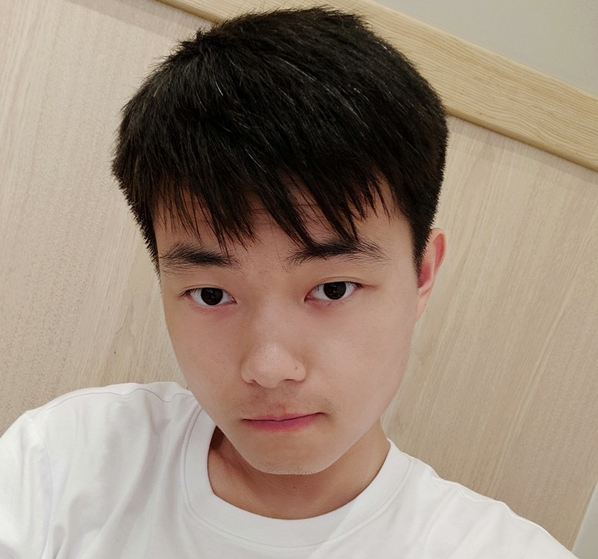
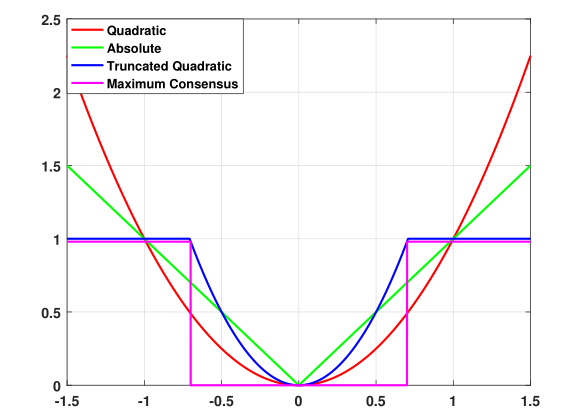
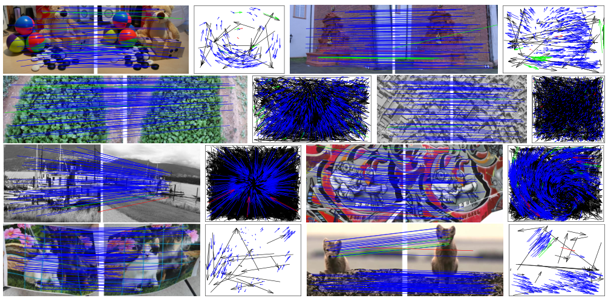
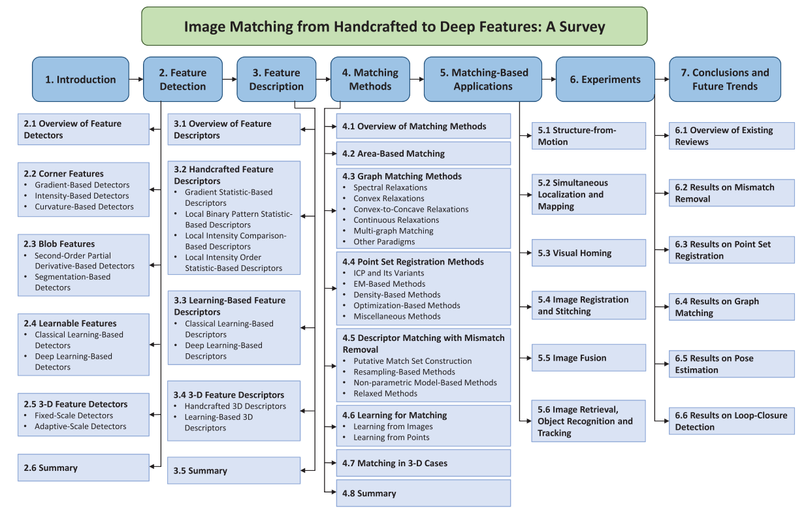
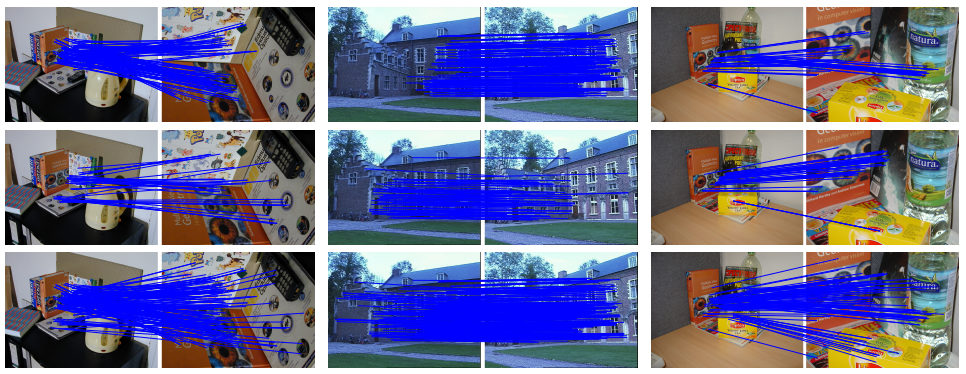
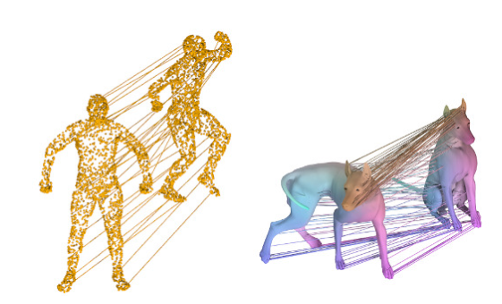
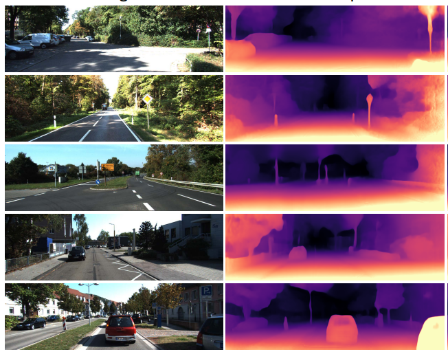

I am currently a research assistant in Electronic Information School, Wuhan University, China, supervised by Prof. Jiayi Ma. I am now actively looking for a PhD position. Before that, I obtained the MSc. degree and the BSc. degree from the same university. My research is mainly related to 3D computer vision and geometry processing. I am also broadly interested in computer graphics and computer vision in general. Currently I am working on 3D deformable shape matching and 3D geometry learning with deep learning and optimization techniques.
You can find my full CV here.

Jump to: 2021, 2020, Under Review.




M.Sc. in Information and Communication Engineering
Wuhan University, MVPLab
2018 - 2021
B.Sc. in Electronic Information Science and Technology
Wuhan University
2014 - 2018
TuSimple-Autonomous Trucking Technology
Worked closely with Dr. Ji Zhao and Dr. Naiyan Wang
November 2020 - March 2021
|
Novel Morphing Model for Shape Matching and Registration from an Extrinsic Perspective
paper in preparation
Shape matching and registration is a long-standing topic in computer vision and graphics, which aims to find one-to-one point correspondences between two natural shapes (typically human bodies). Studies in the last decade have shown considerable progress using intrinsic methods, i.e. tackling the problem by mapping each point into an embedding space. However, to optimally align two shapes, extrinsic methods which operates in the ambient Subspace (our 3D world) have recently proven to be a better solution. This ongoing study is intended to investigate a better morphing model to develop a potentially more accurate method for shape matching and registration. |
 |
|
Deep robust and unsupervised depth estimation and visual odometry from monocular videos
ongoing
The development of deep learning techniques has revolutionized many fields in computer vision. The paradigm now for 3D geometry recovery from images has completely changed since dense and direct estimation is made possible, even in an unsupervised manner. Currently monocular videos are widely used as self-supervised signals for deep network training. However, the signal is by no means perfect, perturbations such as illumination changes and moving objects can greatly affect the learning process. In this project, we try to develop an outlier-resilient scheme for robust learning. |
 |
Email: aoxiangfan@gmail.com